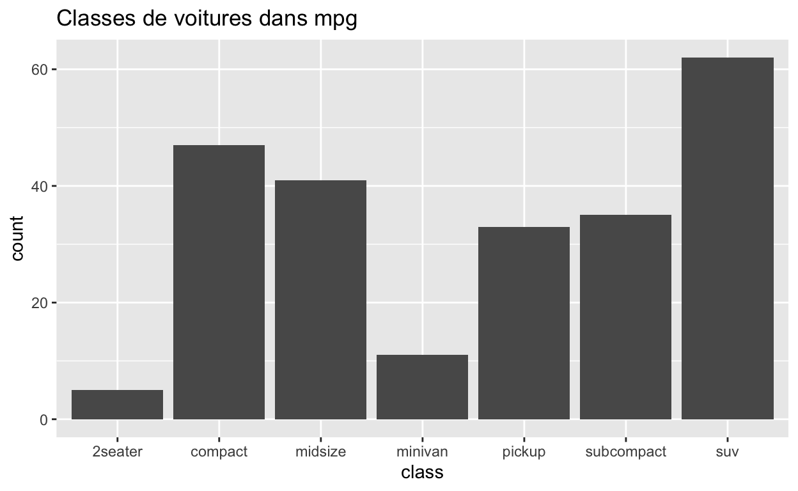
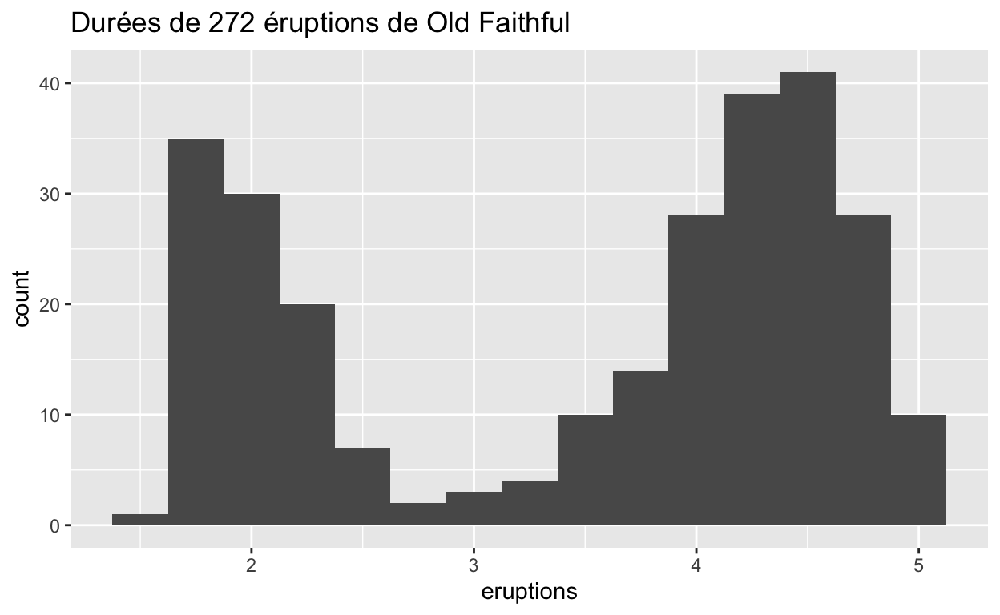
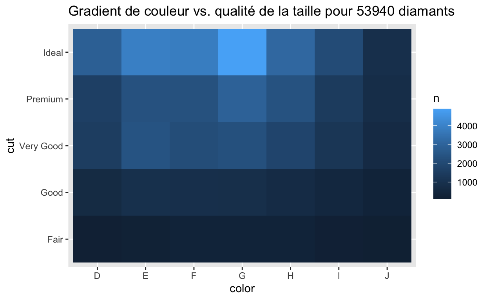
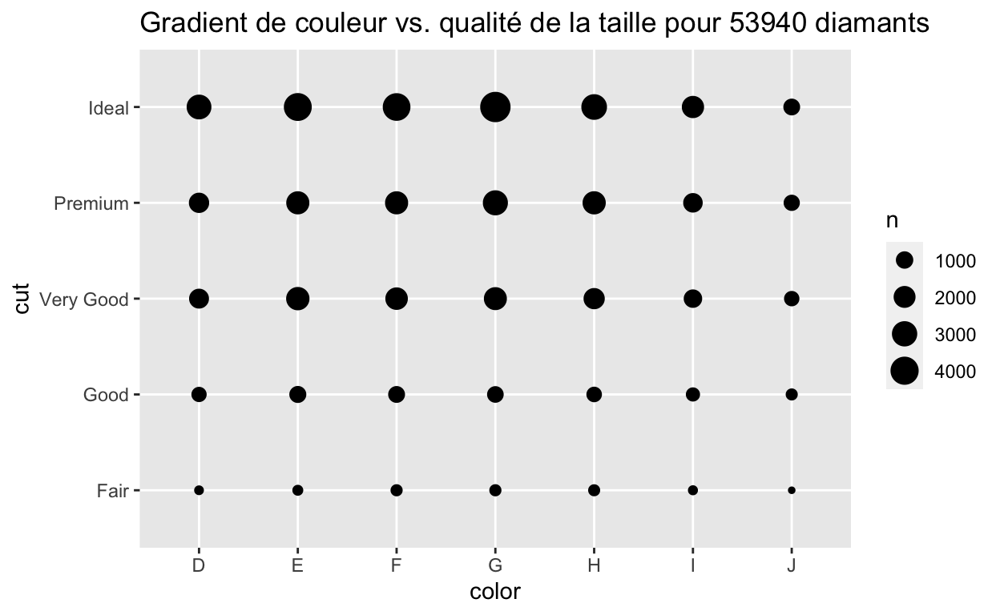
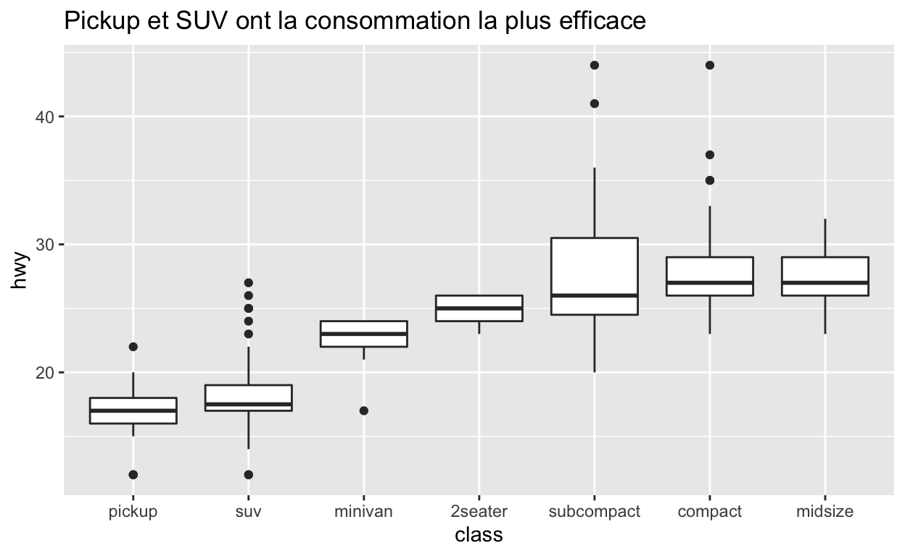
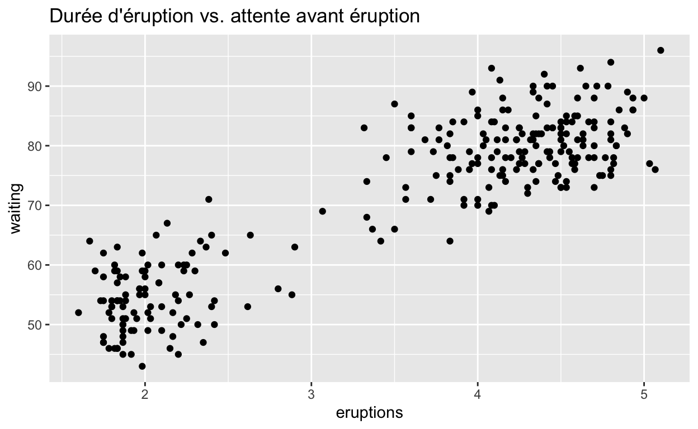

Bienvenue
Ce module va vous montrer comment explorer vos données de façon systématique : ce que les statisticiens appellent l’analyse exploratoire de données (AED). Dans ce module vous allez apprendre à :
Développer une stratégie pour explorer des données
Reconnaître des tendances (patterns) dans les données
Assimiler des astuces pour déterminer quel type de graphique doit être utilisé pour explorer les données
Ce module provient du livre R for Data Science de Hadley Wickham et Garrett Grolemund, publié par O’Reilly Media, Inc., 2016, ISBN: 9781491910399. Vous pouvez vous procurer le livre à shop.oreilly.com.
Analyse exploratoire de donnees
Qu’est-ce que l’analyse exploratoire de données ?
L’analyse exploratoire de données est un cycle itératif qui vous aide à comprendre vos données. Lorsque vous faites un analyse exploratoire de données, vous :
Générez des questions sur vos données
Cherchez des réponses par visualisation, transformation, et/ou modélisation de vos données
Utilisez ce que vous avez appris des données pour affiner vos questions ou générer de nouvelles questions
L’analyse exploratoire de données est une partie importante de toute analyse de données. Vous pouvez utiliser l’analyse exploratoire de données pour faire des découvertes ; ou bien pour vous assurer de la qualité de vos données.
L’analyse exploratoire de données : une façon de penser
L’analyse exploratoire de données n’est pas un processus formel avec une liste stricte de règles. Plus que tout, c’est une façon de penser. Lors des phases initiales de l’analyse exploratoire de données, vous devez vous sentir libre de creuser toutes les questions qui vous passent par la tête. Certaines de ces idées vont se développer, d’autres vont être abandonnées. Tout au long de votre exploration, vous allez noter vos idées et vos découvertes qui méritent d’être approfondies ou communiquées aux autres.
Questions
Le but de l’analyse exploratoire de données est de développer votre compréhension de vos données. Un moyen de faire cela est d’utiliser des questions pour guider votre réflexion. Lorsque vous vous posez une question, la question attire votre attention sur une partie spécifique de votre jeu de données. Cela vous aide à décider quel graphique, modèle, transformation il serait judicieux de mettre en place.
“Far better an approximate answer to the right question, which is often vague, than an exact answer to the wrong question, which can always be made precise. (Mieux vaut une réponse approximative à la bonne question, qui est souvent vague, que la réponse exacte à la mauvaise question, bien qu’elle soit précise.)” — John Tukey
Quantité vs Qualité
L’analyse exploratoire de données est, fondamentalement, un processus créatif. Et comme tout processus créatif, la clé pour se poser de bonnes questions c’est de se poser un grand nombre de questions. Il est difficile de se poser des questions perspicaces au début de votre analyse parce que vous ne savez pas ce qu’il y a dans vos données. Et chaque question que vous allez vous poser va révéler un nouvel aspect de votre jeu de données et augmenter votre chance de découvrir quelque chose. Vous pouvez rapidement creuser dans la partie la plus intéressante de vos données —et développer des questions pertinentes— si vous suivez chaque question avec une nouvelle question basée sur ce que vous avez trouvez.
“There are no routine statistical questions, only questionable statistical routines. (Il n’y a pas de routine de questions statistiques, seulement des routines statistiques discutables).” — Sir David Cox
Deux questions utiles
Il n’y a pas de règle concernant des questions que vous devez vous poser pour guider votre recherche. Cependant, deux types de questions vont toujours être utiles pour faire des découvertes dans vos données :
Quel type de variabilité (ou variance) existe-t-il à l’intérieur de mes variables ?
Quel type de covariation existe-t-il entre mes variables ?
Le reste de ce module va se concentrer sur ces deux questions. Voilà quelques définitions :
Définitions
Une variable est une quantité, une qualité, ou une propriété que vous pouvez mesurer.
Une valeur est l’état d’une variable quand vous la mesurez. La valeur d’une variable peut ainsi varier d’une mesure à l’autre.
Une observation est un ensemble de mesures effectuées dans des conditions similaires (vous effectuez généralement toutes les mesures dans une observation en même temps et sur le même objet). Une observation contiendra plusieurs valeurs, chacune associée à une variable différente. Nous allons parfois désigner une observation comme un cas ou un point de données.
Un jeu de données tabulaire est une table de valeurs, avec chaque valeur associée à une variable et à une observation. Un jeu de données tabulaire est bien ordonné (ou tidy) si chaque valeur est placée dans une cellule, chaque variable dans une colonne et chaque observation dans une ligne.
Jusqu’à présent, tous les jeux de données que vous avez vus dans les modules étaient ordonnés. Dans la vraie vie, la plupart des données ne le sont pas.
Quiz 1 - Découverte ou confirmation ?
Vous pouvez penser à la science comme un processus avec deux étapes : découverte et confirmation. Les scientifiques observent tout d’abord le monde pour découvrir une hypothèse à tester. Ensuite, ils utilisent un test pour tenter de réfuter l’hypothèse face à de nouvelles données. Si l’hypothèse survit à de nombreux tests, les scientifiques commencent à croire que c’est une explication raisonnable des données.
La séparation entre la découverte et la confirmation est particulièrement importante pour les Data scientists. Il arrive souvent que des tendances apparaissent dans les données par coïncidence. Les Data Scientists cherchent ainsi en premier lieu des tendances, puis ils essaient de confirmer que ces tendances existent dans la vraie vie. Parfois, cette confirmation nécessite de calculer la probabilité que l’observation de la tendance est due à la chance, quelque chose qui implique souvent de collecter de nouvelles données.
Quiz 2 - Qualité ou Quantité ?
Quiz 3 - Définitions
iris est un jeu de données dans R qui est très connu. Ce jeu de données décrit 150 fleurs d’iris. Chaque ligne de iris correspond à des mesures de dimensions de pétales et de sépales. Ces mesures peuvent être utilisées pour déduire l’espèce de la fleur, qui est aussi renseignée dans iris.
irisVariabilite
Qu’est-ce que la variabilité ?
La variabilité est la tendance qu’ont les valeurs d’une variable à changer d’une mesure à l’autre. Vous pouvez voir de la variabilité dans la vraie vie. Si vous mesurez n’importe quelle variable continue deux fois —et suffisamment précisément— vous obtiendrez deux résultats différents. Ceci est vrai même si vous mesurez des quantités constantes, comme la vitesse de la lumière. Chacune de vos mesures a une part d’erreur qui varie d’une mesure à l’autre. Les variables catégorielles peuvent aussi varier si vous les mesurez à travers différents objets (p. ex. la couleur des yeux de différentes personnes), ou à différents moments (p. ex. le niveau d’énergie d’un électron à différents moments).
Chaque variable a sa propre tendance de variabilité, qui peut être une information très utile. Un bon moyen de comprendre cette variabilité est de visualiser la distribution des valeurs de la variable. La manière avec laquelle vous allez visualiser la distribution d’une variable va dépendre de la nature de la variable : variable catégorielle ou variable continue.
Variables catégorielles
Une variable est dite catégorielle si elle peut prendre uniquement une valeur au sein d’un petit nombre de possibilités. Dans R, les variables catégorielles sont généralement enregistrées comme facteurs ou comme vecteurs de caractères. Vous pouvez visualiser la distribution d’une variable catégorielle avec un diagramme en barres, comme ci-dessous.

Ne vous inquiétez pas si vous ne savez pas construire ou interpréter un diagramme à barres. Nous allons voir ensemble différents types de graphiques dans ce module. Vous apprendrez à créer chaque type de graphique dans les modules suivants.
Variables continues
Une variable est dite continue si elle peut prendre une série de valeurs infinie, dans le sens où si vous ordonnez les valeurs possibles de la variable le long d’une ligne, une infinité de valeurs existent entre deux points de la ligne. Par exemple, il existe une infinité de valeurs entre 0 et 1 : par exemple 0.9, 0.99, 0.999, et ainsi de suite.
Les nombres et les dates sont deux exemples de variables continues. Vous pouvez visualiser la distribution d’une variable continue avec un histogramme, comme ci-dessous :
Fréquences
Dans les diagrammes à barres et les histogrammes, les grandes barres montrent les valeurs courantes de la variable, c.-à-d. les valeurs qui apparaissent fréquemment. Les barres plus courtes montrent les valeurs moins fréquentes. Là où il n’y a pas de barre, il n’y a pas de valeurs correspondant dans les données. Pour transformer ces informations en questions utiles, tentez de comparez ce que vous observez à ce que vous vous attendiez à voir :
Quelles valeurs sont les plus fréquentes ? Pourquoi ?
Quelles valeurs sont rares ? Pourquoi ? Est-ce que cela est attendu ?
Voyez-vous une tendance à laquelle vous ne vous attendiez pas ? Qu’est-ce qui pourrait l’expliquer ?
Y a-t-il des outliers (données aberrantes), qui sont des valeurs qui semblent bien éloignées des autres valeurs ou ne pas suivre la tendance générale ? Ces outliers sont-ils le résultat d’erreurs lors de l’enregistrement des données ou est-ce autre chose ?
La plupart de ces questions va vous amener à explorer la relation qu’il peut exister entre les variables, pour voir si les valeurs d’une variable peuvent expliquer les valeurs d’une autre variable. On y reviendra sous peu.
Quiz - Fréquences
La diagramme à barres ci-dessous décrit la distribution de la variable class dans le jeu de données mpg, qui est dans le package {ggplot2}. La hauteur des barres révèlent combien de voitures sont dans chaque classe.

mpgClusters
Pour les variables continues, des clusters (= groupes homogènes) de valeurs similaires suggèrent que des sous-groupes existent dans vos données. Pour comprendre ces sous-groupes, demandez-vous :
En quoi les observations au sein de chaque cluster sont similaires entre elles ?
En quoi les observations dans des clusters différents sont différentes les unes des autres ?
Comment pouvez-vous expliquer ou décrire les clusters ?
Pourquoi l’apparence des clusters peut-elle être mal interprétée ?
Quiz - Clusters
L’histogramme ci-dessous montre la distribution de la variable eruptions dans le jeu de données faithful, qui est dans R base. eruptions montre la durée (en minutes) de 272 éruptions du geyser de Old Faithful dans le parc national de Yellowstone.
Pour interpréter l’histogramme, regardez tout d’abord l’axe des x, qui montre la durée des éruptions du jeu de données. L’échelle des x montre que l’éruption la plus courte à duré environ une minute et la plus longue environ 5 minutes.
Pour voir combien d’éruptions ont une durée spécifique, trouvez la durée sur l’axe des x puis regardez la hauteur de la barre au dessus de cette durée. Par exemple, selon l’histogramme, 30 éruptions ont duré environ 2 minutes mais uniquement trois ont duré environ 3 minutes (la hauteur de la barre au-dessus de 2 est 30 et au-dessus de 3 est 3).

Covariation
Qu’est-ce que la covariation ?
Si la variabilité décrit le comportement à l’intérieur d’une variable, la covariation décrit le comportement entre variables. La covariation est la tendance qu’ont les valeurs de deux ou plus variables à varier ensemble de manière connexe. Un bon moyen de voir la covariation est de visualiser la relation entre deux ou plusieurs variables. La façon de le faire va dépendre de la nature des variables (catégorielles ou continues).
Deux variables catégorielles
Vous pouvez représenter la relation entre deux variables catégorielles avec un heatmap ou avec un geom_count :

De nouveau, ne vous inquiétez pas de ne pas savoir comment faire ces graphiques. Pour le moment, restez concentrez sur la stratégie de comment utiliser ces visualisations dans un contexte d’analyse exploratoire de données. Vous apprendrez comment faire ces graphiques dans les modules qui suivent.
Une variable continue et une variable catégorielle
Vous pouvez représenter la relation entre une variable continue et une variable catégorielle avec une boîte à moustaches (boxplot) :

Deux variables continues
Vous pouvez représenter la relation entre deux variables continues avec un nuage de points :

Tendances
Les tendances dans vos données vous donnent des indices sur les relations entre les variables. S’il existe une relation systématique entre deux variables, cela ressortira comme une tendance dans les données. Si vous voyez une tendance, demandez-vous :
Est-ce que cette tendance peut être due à une coïncidence uniquement (par chance) ?
Comment pouvez-vous décrire la relation impliquée par la tendance ?
Quelle est la force de la relation impliquée par la tendance ?
Quelle(s) autre(s) variable(s) pourrai(en)t affecter cette relation ?
Est-ce que la relation change si vous regardez des sous-groupes données séparément ?
Rappelez-vous que les clusters et les outliers sont aussi des types de tendances. Des graphiques en deux dimensions peuvent révéler des clusters et des outliers qui ne seraient pas visibles dans un graphique uni-dimensionnel. Si vous voyez une quelconque tendance, demandez-vous ce qu’elle implique.
Quiz - Tendances
Le nuage de points ci-dessous montre la relation entre la durée d’une éruption de Old Faithful et le temps d’attente avant l’éruption (c.-à-d. le temps passé entre une éruption et la précédente).

L’incertitude
Les tendances sont des outils utiles pour les Data Scientists parce qu’elles révèlent des covariations. Si vous pensez à la variabilité comme à un phénomène qui crée de l’incertitude, la covariation est un phénomène qui réduit l’incertitude. Lorsque deux variables covarient, vous pouvez utiliser les valeurs d’une variable pour faire de meilleure prédictions pour les valeurs de la seconde variable. Si la covariation est due à une relation causale (un cas spécial), vous pouvez utiliser les valeurs d’une variable pour contrôler les valeurs de la seconde.
Récapitulatif
Vous avez appris beaucoup de choses dans ce module. Voilà ce que vous devriez gardez en tête :
L’analyse exploratoire de données est un cycle itératif construit autour du questionnement et du raffinement du questionnement.
Voilà deux questions qui sont toujours utiles :
Quel type de variabilité existe-t-il au sein de mes variables ?
Quel type de variabilité existe-t-il entre mes variables ?
Souvenez vous des définitions de variable, valeur, observation, variabilité, covariation, catégoriel, et continu. Vous allez en avoir besoin à nouveau. Souvent.
Dans ce module, vous avez aussi rencontré certaines recommandations sur les graphiques permettant de représenter la variabilité et la covariation de variables catégorielles et continues. Les graphiques sont un peu comme des questions en analyse exploratoire de données : nous vous recommandons d’en faire beaucoup et d’essayer tout ce qui attise votre curiosité. Vous pouvez par la suite affiner les graphiques que vous voulez montrer à d’autres personnes. Cela viendra naturellement durant l’analyse exploratoire de données.
Ces suggestions peuvent vous servir de base pour visualiser vos données. Dans le prochain module, vous apprendrez à faire chaque type de graphique ainsi qu’à utiliser les bonnes pratiques et des compétences avancées lors de la visualisation de données.